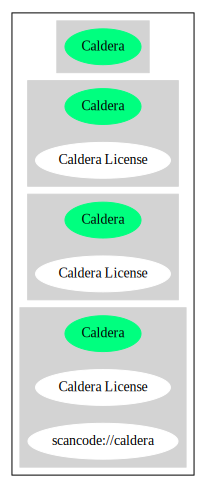

Key |
Value |
|---|---|
Fullname |
Caldera License |
Shortname |
Caldera |
Rating |
Unknown, probably Attention or Stop or No-Go |
Classification |
NoCopyleft |
Other Names:
scancode://caldera
Homepage: http://www.lemis.com/grog/UNIX/ancient-source-all.pdf
SPDX: http://spdx.org/licenses/Caldera.json
Caldera International, Inc. hereby grants a fee free license that includes the
rights use, modify and distribute this named source code, including creating
derived binary products created from the source code. The source code for which
Caldera International, Inc. grants rights are limited to the following UNIX
Operating Systems that operate on the 16-Bit PDP-11 CPU and early versions of
the 32-Bit UNIX Operating System, with specific exclusion of UNIX System III and
UNIX System V and successor operating systems:
32-bit 32V UNIX
16 bit UNIX Versions 1, 2, 3, 4, 5, 6, 7
Caldera International, Inc. makes no guarantees or commitments that any source
code is available from Caldera International, Inc.
The following copyright notice applies to the source code files for which this
license is granted.
Copyright(C) Caldera International Inc. All rights reserved.
Redistribution and use in source and binary forms, with or without modification,
are permitted provided that the following conditions are met:
Redistributions of source code and documentation must retain the above copyright
notice, this list of conditions and the following disclaimer.
Redistributions in binary form must reproduce the above copyright notice, this
list of conditions and the following disclaimer in the documentation and/or
other materials provided with the distribution.
All advertising materials mentioning features or use of this software must
display the following acknowledgement: This product includes software developed
or owned by Caldera International, Inc.
Neither the name of Caldera International, Inc. nor the names of other
contributors may be used to endorse or promote products derived from this
software without specific prior written permission.
USE OF THE SOFTWARE PROVIDED FOR UNDER THIS LICENSE BY CALDERA INTERNATIONAL,
INC. AND CONTRIBUTORS ``AS IS'' AND ANY EXPRESS OR IMPLIED WARRANTIES,
INCLUDING, BUT NOT LIMITED TO, THE IMPLIED WARRANTIES OF MERCHANTABILITY AND
FITNESS FOR A PARTICULAR PURPOSE ARE DISCLAIMED. IN NO EVENT SHALL CALDERA
INTERNATIONAL, INC. BE LIABLE FOR ANY DIRECT, INDIRECT INCIDENTAL, SPECIAL,
EXEMPLARY, OR CONSEQUENTIAL DAMAGES (INCLUDING, BUT NOT LIMITED TO, PROCUREMENT
OF SUBSTITUTE GOODS OR SERVICES; LOSS OF USE, DATA, OR PROFITS; OR BUSINESS
INTERRUPTION) HOWEVER CAUSED AND ON ANY THEORY OF LIABILITY, WHETHER IN
CONTRACT, STRICT LIABILITY, OR TORT (INCLUDING NEGLIGENCE OR OTHERWISE) ARISING
IN ANY WAY OUT OF THE USE OF THIS SOFTWARE, EVEN IF ADVISED OF THE POSSIBILITY
OF SUCH DAMAGE.SPDX
Scancode
{
"__impliedNames": [
"Caldera",
"Caldera License",
"scancode://caldera"
],
"__impliedId": "Caldera",
"facts": {
"SPDX": {
"isSPDXLicenseDeprecated": false,
"spdxFullName": "Caldera License",
"spdxDetailsURL": "http://spdx.org/licenses/Caldera.json",
"_sourceURL": "https://spdx.org/licenses/Caldera.html",
"spdxLicIsOSIApproved": false,
"spdxSeeAlso": [
"http://www.lemis.com/grog/UNIX/ancient-source-all.pdf"
],
"_implications": {
"__impliedNames": [
"Caldera",
"Caldera License"
],
"__impliedId": "Caldera",
"__isOsiApproved": false,
"__impliedURLs": [
[
"SPDX",
"http://spdx.org/licenses/Caldera.json"
],
[
null,
"http://www.lemis.com/grog/UNIX/ancient-source-all.pdf"
]
]
},
"spdxLicenseId": "Caldera"
},
"Scancode": {
"otherUrls": null,
"homepageUrl": "http://www.lemis.com/grog/UNIX/ancient-source-all.pdf",
"shortName": "Caldera License",
"textUrls": null,
"text": "Caldera International, Inc. hereby grants a fee free license that includes the\nrights use, modify and distribute this named source code, including creating\nderived binary products created from the source code. The source code for which\nCaldera International, Inc. grants rights are limited to the following UNIX\nOperating Systems that operate on the 16-Bit PDP-11 CPU and early versions of\nthe 32-Bit UNIX Operating System, with specific exclusion of UNIX System III and\nUNIX System V and successor operating systems:\n\n32-bit 32V UNIX\n16 bit UNIX Versions 1, 2, 3, 4, 5, 6, 7\n\nCaldera International, Inc. makes no guarantees or commitments that any source\ncode is available from Caldera International, Inc.\n\nThe following copyright notice applies to the source code files for which this\nlicense is granted.\n\nCopyright(C) Caldera International Inc. All rights reserved.\n\nRedistribution and use in source and binary forms, with or without modification,\nare permitted provided that the following conditions are met:\n\nRedistributions of source code and documentation must retain the above copyright\nnotice, this list of conditions and the following disclaimer.\n\nRedistributions in binary form must reproduce the above copyright notice, this\nlist of conditions and the following disclaimer in the documentation and/or\nother materials provided with the distribution.\n\nAll advertising materials mentioning features or use of this software must\ndisplay the following acknowledgement: This product includes software developed\nor owned by Caldera International, Inc.\n\nNeither the name of Caldera International, Inc. nor the names of other\ncontributors may be used to endorse or promote products derived from this\nsoftware without specific prior written permission.\n\nUSE OF THE SOFTWARE PROVIDED FOR UNDER THIS LICENSE BY CALDERA INTERNATIONAL,\nINC. AND CONTRIBUTORS ``AS IS'' AND ANY EXPRESS OR IMPLIED WARRANTIES,\nINCLUDING, BUT NOT LIMITED TO, THE IMPLIED WARRANTIES OF MERCHANTABILITY AND\nFITNESS FOR A PARTICULAR PURPOSE ARE DISCLAIMED. IN NO EVENT SHALL CALDERA\nINTERNATIONAL, INC. BE LIABLE FOR ANY DIRECT, INDIRECT INCIDENTAL, SPECIAL,\nEXEMPLARY, OR CONSEQUENTIAL DAMAGES (INCLUDING, BUT NOT LIMITED TO, PROCUREMENT\nOF SUBSTITUTE GOODS OR SERVICES; LOSS OF USE, DATA, OR PROFITS; OR BUSINESS\nINTERRUPTION) HOWEVER CAUSED AND ON ANY THEORY OF LIABILITY, WHETHER IN\nCONTRACT, STRICT LIABILITY, OR TORT (INCLUDING NEGLIGENCE OR OTHERWISE) ARISING\nIN ANY WAY OUT OF THE USE OF THIS SOFTWARE, EVEN IF ADVISED OF THE POSSIBILITY\nOF SUCH DAMAGE.",
"category": "Permissive",
"osiUrl": null,
"owner": "Caldera",
"_sourceURL": "https://github.com/nexB/scancode-toolkit/blob/develop/src/licensedcode/data/licenses/caldera.yml",
"key": "caldera",
"name": "Caldera License",
"spdxId": "Caldera",
"notes": null,
"_implications": {
"__impliedNames": [
"scancode://caldera",
"Caldera License",
"Caldera"
],
"__impliedId": "Caldera",
"__impliedCopyleft": [
[
"Scancode",
"NoCopyleft"
]
],
"__calculatedCopyleft": "NoCopyleft",
"__impliedText": "Caldera International, Inc. hereby grants a fee free license that includes the\nrights use, modify and distribute this named source code, including creating\nderived binary products created from the source code. The source code for which\nCaldera International, Inc. grants rights are limited to the following UNIX\nOperating Systems that operate on the 16-Bit PDP-11 CPU and early versions of\nthe 32-Bit UNIX Operating System, with specific exclusion of UNIX System III and\nUNIX System V and successor operating systems:\n\n32-bit 32V UNIX\n16 bit UNIX Versions 1, 2, 3, 4, 5, 6, 7\n\nCaldera International, Inc. makes no guarantees or commitments that any source\ncode is available from Caldera International, Inc.\n\nThe following copyright notice applies to the source code files for which this\nlicense is granted.\n\nCopyright(C) Caldera International Inc. All rights reserved.\n\nRedistribution and use in source and binary forms, with or without modification,\nare permitted provided that the following conditions are met:\n\nRedistributions of source code and documentation must retain the above copyright\nnotice, this list of conditions and the following disclaimer.\n\nRedistributions in binary form must reproduce the above copyright notice, this\nlist of conditions and the following disclaimer in the documentation and/or\nother materials provided with the distribution.\n\nAll advertising materials mentioning features or use of this software must\ndisplay the following acknowledgement: This product includes software developed\nor owned by Caldera International, Inc.\n\nNeither the name of Caldera International, Inc. nor the names of other\ncontributors may be used to endorse or promote products derived from this\nsoftware without specific prior written permission.\n\nUSE OF THE SOFTWARE PROVIDED FOR UNDER THIS LICENSE BY CALDERA INTERNATIONAL,\nINC. AND CONTRIBUTORS ``AS IS'' AND ANY EXPRESS OR IMPLIED WARRANTIES,\nINCLUDING, BUT NOT LIMITED TO, THE IMPLIED WARRANTIES OF MERCHANTABILITY AND\nFITNESS FOR A PARTICULAR PURPOSE ARE DISCLAIMED. IN NO EVENT SHALL CALDERA\nINTERNATIONAL, INC. BE LIABLE FOR ANY DIRECT, INDIRECT INCIDENTAL, SPECIAL,\nEXEMPLARY, OR CONSEQUENTIAL DAMAGES (INCLUDING, BUT NOT LIMITED TO, PROCUREMENT\nOF SUBSTITUTE GOODS OR SERVICES; LOSS OF USE, DATA, OR PROFITS; OR BUSINESS\nINTERRUPTION) HOWEVER CAUSED AND ON ANY THEORY OF LIABILITY, WHETHER IN\nCONTRACT, STRICT LIABILITY, OR TORT (INCLUDING NEGLIGENCE OR OTHERWISE) ARISING\nIN ANY WAY OUT OF THE USE OF THIS SOFTWARE, EVEN IF ADVISED OF THE POSSIBILITY\nOF SUCH DAMAGE.",
"__impliedURLs": [
[
"Homepage",
"http://www.lemis.com/grog/UNIX/ancient-source-all.pdf"
]
]
}
}
},
"__impliedCopyleft": [
[
"Scancode",
"NoCopyleft"
]
],
"__calculatedCopyleft": "NoCopyleft",
"__isOsiApproved": false,
"__impliedText": "Caldera International, Inc. hereby grants a fee free license that includes the\nrights use, modify and distribute this named source code, including creating\nderived binary products created from the source code. The source code for which\nCaldera International, Inc. grants rights are limited to the following UNIX\nOperating Systems that operate on the 16-Bit PDP-11 CPU and early versions of\nthe 32-Bit UNIX Operating System, with specific exclusion of UNIX System III and\nUNIX System V and successor operating systems:\n\n32-bit 32V UNIX\n16 bit UNIX Versions 1, 2, 3, 4, 5, 6, 7\n\nCaldera International, Inc. makes no guarantees or commitments that any source\ncode is available from Caldera International, Inc.\n\nThe following copyright notice applies to the source code files for which this\nlicense is granted.\n\nCopyright(C) Caldera International Inc. All rights reserved.\n\nRedistribution and use in source and binary forms, with or without modification,\nare permitted provided that the following conditions are met:\n\nRedistributions of source code and documentation must retain the above copyright\nnotice, this list of conditions and the following disclaimer.\n\nRedistributions in binary form must reproduce the above copyright notice, this\nlist of conditions and the following disclaimer in the documentation and/or\nother materials provided with the distribution.\n\nAll advertising materials mentioning features or use of this software must\ndisplay the following acknowledgement: This product includes software developed\nor owned by Caldera International, Inc.\n\nNeither the name of Caldera International, Inc. nor the names of other\ncontributors may be used to endorse or promote products derived from this\nsoftware without specific prior written permission.\n\nUSE OF THE SOFTWARE PROVIDED FOR UNDER THIS LICENSE BY CALDERA INTERNATIONAL,\nINC. AND CONTRIBUTORS ``AS IS'' AND ANY EXPRESS OR IMPLIED WARRANTIES,\nINCLUDING, BUT NOT LIMITED TO, THE IMPLIED WARRANTIES OF MERCHANTABILITY AND\nFITNESS FOR A PARTICULAR PURPOSE ARE DISCLAIMED. IN NO EVENT SHALL CALDERA\nINTERNATIONAL, INC. BE LIABLE FOR ANY DIRECT, INDIRECT INCIDENTAL, SPECIAL,\nEXEMPLARY, OR CONSEQUENTIAL DAMAGES (INCLUDING, BUT NOT LIMITED TO, PROCUREMENT\nOF SUBSTITUTE GOODS OR SERVICES; LOSS OF USE, DATA, OR PROFITS; OR BUSINESS\nINTERRUPTION) HOWEVER CAUSED AND ON ANY THEORY OF LIABILITY, WHETHER IN\nCONTRACT, STRICT LIABILITY, OR TORT (INCLUDING NEGLIGENCE OR OTHERWISE) ARISING\nIN ANY WAY OUT OF THE USE OF THIS SOFTWARE, EVEN IF ADVISED OF THE POSSIBILITY\nOF SUCH DAMAGE.",
"__impliedURLs": [
[
"SPDX",
"http://spdx.org/licenses/Caldera.json"
],
[
null,
"http://www.lemis.com/grog/UNIX/ancient-source-all.pdf"
],
[
"Homepage",
"http://www.lemis.com/grog/UNIX/ancient-source-all.pdf"
]
]
}